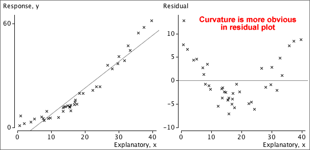
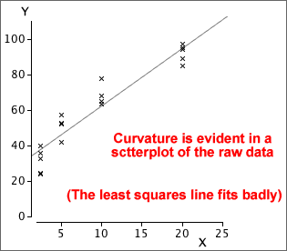
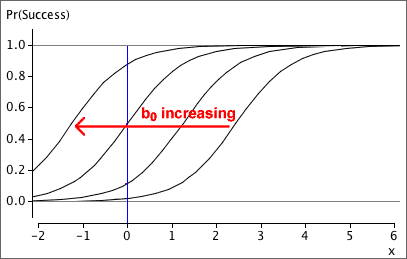

The following four requirements are implicit in the model but
may be violated, as illustrated by the examples.
Linearity
The response may change nonlinearly with x.
Constant standard deviation
The response may be more variable at some x than others.
Normal distribution for errors
The errors may have skew distributions.
Independent errors
When the observations are ordered in time, successive errors may be correlated.
Residual plots
The above problems may be evident in a scatterplot of the raw data, but a residual
plot often highlights any problems.

14.1.2 Curvature — transforming X
Linearising the relationship between Y and X
Even if X and Y are nonlinearly related,
some transformation of X may be linearly
related to some transformation of Y. For example, the data may satisfy
the model
y2 = β0 + β1 log x + ε
ε ~ normal (0 , σ)
The parameters of this model could again be estimated by least squares, based
on the transformed values of the two variables, and confidence intervals and
hypothesis tests would be valid.
Example: Transformation of X

For this data set, a linear model seems reasonable after a log transformation
of X.
14.1.3 Curvature and non-constant variance
Transformation and the error standard deviation
Transforming X does not affect the spread of
response values at each value of X. Transformation of X therefore
does not affect whether or not the linear model's assumption of constant error
standard deviation holds.
However, transforming Y not only affects
linearity of the relationship, but also affects whether
or not the error standard deviation is constant.
Example
The raw data shown in the scatterplot on the top left shows both curvature
and non-constant variance — the y-values are much more variable when X is near
0 than when X is high.
A log transformation of Y both linearises the relationship and removes
the non-constant variance.
Fortunately, the same transformation of the response that linearises
the relationship often also results in fairly constant
error standard deviation.
14.1.4 Transformations and prediction ((advanced))
Prediction using transformed variables
To predict Y at any value x, we use the least squares line
that was fitted to the transformed data.
Transform x
Put this transformed x-value into the least squares equation to
obtain a prediction of the transformedY.
Apply the inverse transformation to the one that was used
on Y to obtain the prediction of Y itself
Example
In the example below, a linear model can be used to describe the relationship
between log10(y)
and log10(x). The diagram shows how it can be used to predict y from
x.
Prediction intervals can be obtained in a similar way. A prediction interval
is found using the transformed variables, then its end-points are back-transformed
into values of Y on its original scale.
For example, if the square root of Y is linearly related to X,
we find a prediction interval for sqrt(Y), then square both ends of
this interval to get a prediction interval for Y itself.
14.1.5 Outliers and leverage
Outliers and errors
In a scatterplot, cross that is unusually far above or below
the regression line is an outlier. It would correspond to a large error, ε.
Standardised residuals
The least squares residuals are estimates of the unknown errors and
can be used in a similar way to give information about whether there is an outlier.
To help assess the residuals, we usually standardise them — dividing
each by an estimate of its standard deviation.
standardised residual =
e
se
Large residuals pull very strongly on the line since they are squared in
the least squares criterion. As a result,
Outliers will strongly pull the least squares line towards themselves,
making their residuals smaller than you might otherwise expect.
Leverage
If an outlier corresponds to an x-value near its mean, it usually
will have a large residual,
However if the outlier occurs at an extreme x-value, it has a stronger
influence on the position of the least squares line than the other data points.
Such points are called high leverage points and pull the least
squares line strongly towards them. Outliers that are high leverage points may
therefore result in residuals that do not stand out from the other residuals.
14.1.6 Non-normal errors ((optional))
Normal probability plot of residuals
The normal linear model assumes that the model errors are
normally distributed,
ε ~ normal (0 , σ)
A histogram of the residuals can be examined for normality but a better way
is with a normal
probability plot of the residuals. If the residuals are normally
distributed, the crosses in the normal probability plot should lie close to a
straight line.
Warning
If the assumptions of linearity and constant variance are violated, or if
there are outliers, the probability plot of residuals will often be curved, irrespective
of the error distribution.
Only draw a probability plot if you are sure that the data are linear,
have constant variance and have no outliers.
14.1.7 Correlated errors ((optional))
Independence of the errors
The normal
linear model assumes that the errors are uncorrelated with each other, but correlated
errors sometimes arise.
Correlated errors may arise in an experiment in a greenhouse where adjacent
plants will be grown in similar conditions (light, moisture, air flow). An
unusually high growth rate for one plant may be associated with environmental
conditions that also cause unusually high growth rates in adjacent plants.
Correlated errors are most common when the observations are made sequentially
in time. This is called serial correlation.
Assessing serial correlation
Strong serial correlation may be visible in a plot of residuals against time.
A more formal test uses a test statistic called the Durbin-Watson
statistic, d. Writing the successive
residuals as e1, e2, ..., en,
If successive residuals are similar,
d will be close to zero. An approximate p-value can be obtained from
a computer, special statistical tables or with a simulation such as that below.
Warning
If a linear model is used for a time series, but the relationship is actually
nonlinear, successive residuals also tend to be similar and the Durbin-Watson
statistic will also be small.
An unusually small Durbin-Watson statistic can be caused by either
serial correlation or nonlinearity.
14.2 Logistic regression
14.2.1 Categorical responses
Comparing the response distributions at different
x-values
If a response, Y, is numerical and explanatory variable, X,
is categorical, box plots can be used to compare the response distribution at
the different x-values.
If the response, Y, is categorical and the explanatory variable,
X, is numerical, we are again interested in comparing the response
distribution at different x-values.
We might use X to define 'groups' by splitting its values
into classes (as might be done to draw a histogram) and this allows us to use
stacked bar charts to describe the relationship.
It is not necessary for the 'classes' to be of equal width. For example, some of the age groups below are of width 3 months, whereas others are 6 months and the extreme classes are wider still.
14.2.2 Fitted values and predictions
Linear model
It is tempting to try a linear
model to explain how the proportion in one response category is affected by the explanatory
variable,
predicted proportion,
Unfortunately this may result in predicted proportions greater than 1 or less than 0.
Nonlinear models
We should use a model that gives values between 0 and 1 for all possible
values of X. This means that the equation must be nonlinear in X.
14.2.3 Logistic curve
A curve that lies between 0 and 1 for all values of x
Various
nonlinear equations have values between 0
and 1 for all values of x, but the simplest of these is a logistic
curve,
predicted proportion,
The parameters of the logistic curve
The parameter b1 is called the slope of the curve. Increasing it makes the curve steeper, and
its sign determines whether the curve slopes upwards or downwards.
The parameter b0 is the curve's intercept and it determines the horizontal position of the curve. Increasing it shifts the curve
to the left.

14.2.4 Obtaining a good fit
Estimating the logistic parameters
Estimating the parameters b0 and b1 of a logistic model is more difficult than estimating the parameters for a linear model by least squares, but many statistical programs will do the appropriate calculations for
you.
We therefore take a 'black box' approach and simply show what parameter estimation
gives without further justification.